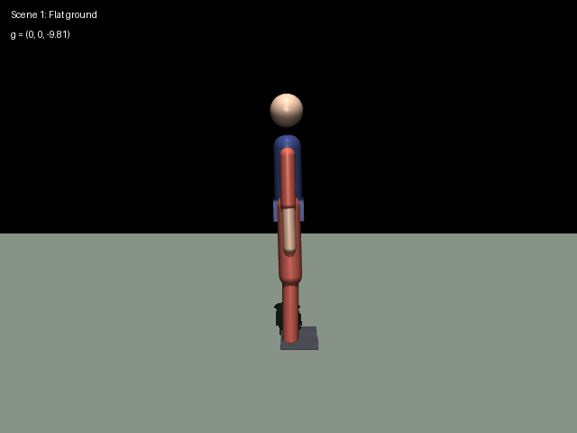
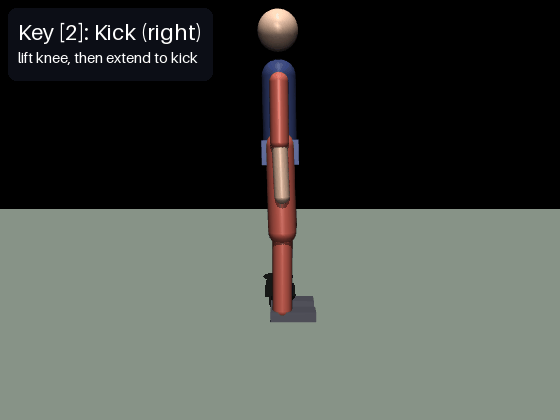
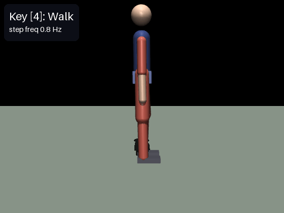
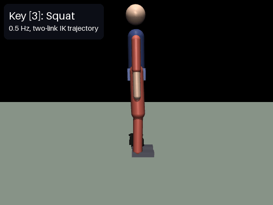
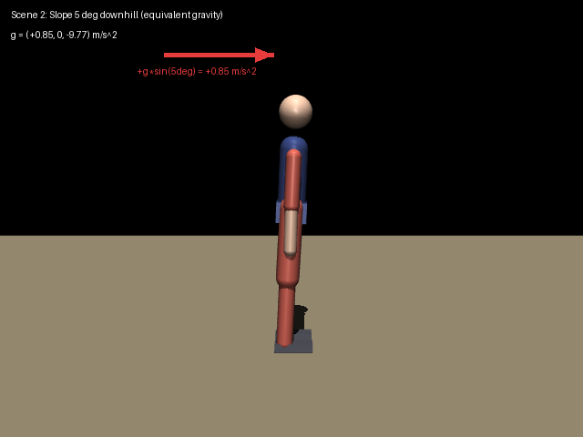
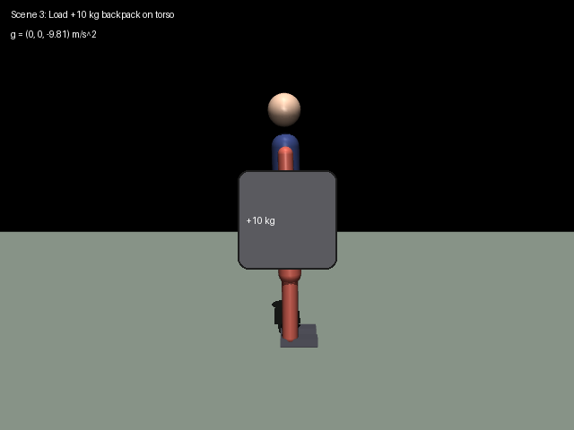

MuJoCo 肌肉骨骼人键盘遥操作：行走、踢腿与蹲起
1. 模块概述
本模块在 MuJoCo 物理仿真器中构建了一个平面（矢状面）全身肌肉骨骼人，由 22 条 Hill 型肌肉驱动 13 个自由度（浮动基座 3 + 下肢 6 + 上肢 4），实现了课程任务 (1)：对人形机器人/肌肉骨骼人进行物理仿真，通过键盘对机器人进行运动控制。
与常见的"每个关节一个电机"的简化不同，本模块的驱动力完全由肌肉产生：控制器输出的不是关节力矩，而是 22 维肌肉激活量，肌肉经过激活动力学与 Hill 力-长度-速度曲线滤波后产生张力，张力再通过力臂系数映射为关节力矩。肌肉只能拉、不能推，每个关节的自由度由一对拮抗肌（屈肌/伸肌）共同约束。
主要特性：
- 分层控制：动作编排器（Composer）→ 姿势反射层（Reflex）→ Hill 肌肉动力学 → MuJoCo 步进；
- 键盘遥操作：动作键切换站立/行走/踢腿/蹲起/放松，手动兴奋键可直接兴奋任意一块肌肉并与当前动作叠加；
- 三种场景：平地、5° 下坡（等效重力）、负重 10 kg 背包，均通过同一套控制器参数稳定运行；
- launch 一键启动，并附带无需 ROS 的离线自检（
check）与多场景性能评测（eval）。
说明：本模块对应任务 (1) 的物理仿真与键盘运动控制，控制回路为生物合理反射模型，不涉及感知/规划/端到端神经网络算法（该要求针对任务 (2)–(4)）。
目录结构
src/musculoskeletal/mujoco_msk_human_walking_teleop/
├── main.py # 统一入口：check / eval / demo / sim / keyboard
├── package.xml # catkin 包描述（rospy, std_msgs, sensor_msgs）
├── README.md # 快速上手说明
├── CMakeLists.txt
├── launch/main.launch # 一键启动：仿真节点 + 可选 xterm 键盘节点
├── config/params.yaml # 反射增益 / 步态 / 蹲起 / 踢腿参数
├── eval/ # 评测工具
│ └── render_scenes.py # 场景说明截图生成脚本（英文标注）
├── models/
│ ├── msk_human.xml # 肌肉骨骼人模型（13 DoF + 22 motor）
│ ├── scene_flat.xml # 平地场景
│ ├── scene_slope5.xml # 5 度下坡场景（等效重力法）
│ └── scene_load.xml # 负载场景（运行时躯干 +10 kg）
└── scripts/
├── msk_human_core.py # 仿真核心：Hill 肌肉、反射层、动作编排、自检
├── msk_human_keyboard.py # 键盘策略（按键 -> 激活/动作，被键盘节点导入）
├── msk_human_eval.py # 离线多场景性能评测
├── msk_human_sim_node.py # ROS 仿真节点（500 Hz 控制回路）
└── msk_human_keyboard_node.py # ROS 键盘遥操作节点（xterm 中运行）
2. 运行环境
| 项目 | 版本/说明 |
|---|---|
| 操作系统 | Ubuntu 20.04 |
| ROS | 1 Noetic（rospy；本模块未适配 ROS 2） |
| Python | 3.8 |
| MuJoCo | mujoco==3.2.3（pip install mujoco==3.2.3） |
| 其他依赖 | numpy、PyYAML、xterm（sudo apt install xterm） |
安装与构建：
# 1. 安装 Python 依赖
pip3 install mujoco==3.2.3 numpy pyyaml
sudo apt install xterm
# 2. 建立工作空间并放置本模块（假设模块位于 ~/catkin_ws/src/ 下）
cd ~/catkin_ws
catkin_make -DCATKIN_WHITELIST_PACKAGES="mujoco_msk_human_walking_teleop"
source devel/setup.bash
3. 仿真步骤
3.1 一键启动
roslaunch mujoco_msk_human_walking_teleop main.launch
launch 会同时启动两个节点：MuJoCo 仿真窗口（默认平地场景）和一个 xterm 键盘窗口。启动后人物以站立姿态稳定在场景中：

3.2 键盘操作
在 xterm 窗口中按键（按 H 可随时打印帮助）：
| 类别 | 按键 | 功能 |
|---|---|---|
| 动作切换 | 1 |
站立 |
2 |
踢腿（右腿，单次） | |
3 |
蹲起（连续周期） | |
4 |
行走 | |
0 |
全身放松（肌肉激活清零，身体瘫倒） | |
| 步频调节 | + / - |
行走步频加快/减慢（0.5–1.5 倍） |
| 手动兴奋 | Q/W 左髋屈/伸，A/S 左膝屈/伸，Z/X 左踝背屈/跖屈 |
自锁式：按一次开启、再按一次关闭，叠加在反射层之上 |
U/I、J/K、N/M |
右腿髋/膝/踝 | |
R/T 双肩前摆/后摆，F/G 双肘屈/伸 |
上肢 | |
| 其他 | H |
打印帮助 |
ESC |
退出键盘节点 |
3.3 站立与踢腿
按 1 站稳后按 2：机器人将支撑腿微屈、右腿提膝蓄力，随后股四头肌快速兴奋伸膝踢击，脚尖峰值高度约 0.6 m：

3.4 行走与步频调节
按 4 进入行走（基频 0.8 Hz），行走中按 + 可逐步加快步频（0.8 → 0.95 → 1.10 Hz，每次 +0.15 倍）：

3.5 蹲起
按 3 进入 0.5 Hz 连续蹲起，骨盆按余弦轨迹升降，双腿由二连杆逆解同步协调：

3.6 场景切换
通过 launch 参数切换场景：
参数说明：本包不使用 ROS 参数服务器——反射增益、步态、蹲起、踢腿参数统一由 config/params.yaml 在节点启动时直接加载（load_params()），修改该文件后重启节点即可生效。
# 5 度坡道
roslaunch mujoco_msk_human_walking_teleop main.launch scene:=slope5
# 负载 10 kg（运行时给躯干加 10 kg 背包并更新惯量）
roslaunch mujoco_msk_human_walking_teleop main.launch scene:=load
# 关闭 3D viewer 与 xterm 键盘终端（无显示器环境）
roslaunch mujoco_msk_human_walking_teleop main.launch viewer:=false keyboard:=false
# 只关闭 3D viewer、保留键盘终端（终端交互录屏）
roslaunch mujoco_msk_human_walking_teleop main.launch viewer:=false
场景截图（由 eval/render_scenes.py 离屏渲染生成，含英文标注：坡道场景
红色箭头为沿坡向下的重力分量、负载场景躯干上灰色矩形为 10 kg 背包）：


3.7 离线自检与性能评测（无需 ROS）
cd ~/catkin_ws/src/musculoskeletal/mujoco_msk_human_walking_teleop
python3 main.py check # 模型自检：场景加载 / 22 块肌肉兴奋方向 / 三场景站立
python3 main.py eval # 多场景性能评测，结果写入 eval_results.json
check 的标准输出（全部通过）：
[PASS] load_scene_flat
[PASS] load_scene_slope5
[PASS] load_scene_load
[PASS] n_muscle nu=22
[PASS] n_joint njnt=13
[PASS] muscle_sign 22/22 方向正确
[PASS] stand_6s_flat z=0.876 pitch=-0.017 t=6.0
[PASS] stand_6s_slope5 z=0.875 pitch=+0.034 t=6.0
[PASS] stand_6s_load z=0.876 pitch=-0.021 t=6.0
[PASS] squat_ik shallow hip=0.32 knee=0.67 ankle=0.34 | deep ankle=0.45 (limit)
[PASS] load_mass torso mass 18.8 -> 28.8
---- check: 11/11 passed ----
eval 的标准输出：
================= 性能汇总 =================
平地站立成功率 3/3
蹲起周期数(15s) 7
踢腿脚尖峰值(m) 0.609
平地行走距离(m)/速度(m/s) 2.419 / 0.121
下坡行走距离(m) 9.958
负载行走距离(m) 1.505
=============================================
4. 计算原理
4.1 Hill 肌肉模型
每块肌肉是一个一阶激活状态 + 非线性力生产机构。设第 块肌肉的神经输入（目标激活）为 ：
（1）激活动力学（一阶低通，兴奋快、去激活慢）：
（2）力-长度曲线（高斯型， 取关节活动范围中点， 取半量程）：
（3）力-速度曲线（Hill 方程， 为归一化缩短速度，缩短为正）：
（4）肌肉张力（肌肉只能拉不能推，故截断为非负）：
其中 为峰值力矩（如膝伸肌 290 N·m、踝背屈肌 60 N·m）， 为肌肉 跨越的关节。
（5）关节力矩合成：XML 中每块肌肉是一个 motor 执行器（gear = c_i，屈肌 、伸肌 ），关节净力矩为跨关节肌肉张力之和：
4.2 姿势反射层（PD 反射 + 拮抗共收缩）
对每个关节，反射层把参考角与实际角的误差转换为肌肉激活（模拟脊髓反射）：
其中 为共收缩力矩（如髋 10 N·m、踝 10 N·m）：两块拮抗肌各被施加等量的力矩配额，净力矩为零、只提供关节刚度，类似人体运动中的共收缩（co-contraction）。注意这里必须按各自的峰值力 换算激活——若直接给两块肌肉相等的激活量，由于伸肌 普遍更大，净力矩会系统性偏向伸展方向，导致全身后倾。
踝关节的 需满足倒立摆临界刚度条件才能稳住站立模态。把身体视为绕踝转动的倒立摆，恢复力矩 需要超过重力倾覆力矩 ：
实际取 、（坡道与负载场景下等效 更高，实际取值需在此临界之上留出裕量）。髋/膝的 必须取小（10/6）： 在快速摆动时是反向制动力矩，还会通过拮抗映射兴奋伸肌"刹车"，使步幅严重缩水。
4.3 步态生成（相位振荡器）
行走时每个腿有一个相位 ，左右腿相差 ，相位以步态基频推进（ 键缩放）：
三条参考轨迹（摆动相取 使膝只在腿前摆时屈曲，支撑相保持近伸直）：
踝相位滞后 rad 是推进力的关键：腿在最后方（）时 ，踝跖屈蹬地（push-off）；腿摆到最前方时踝背屈，以脚跟先着地。若相位取反，会出现"脚尖先戳地、后蹬反而抬脚"的倒挂步态，几乎无法前进。
4.4 蹲起逆运动学（平面二连杆）
给定骨盆目标高度 ，髋到踝的竖直距离 ，由余弦定理解膝内角 ：
其中 m（大腿）、 m（小腿）。骨盆高度按余弦轨迹升降：。浅蹲时 不超过踝限位，脚掌保持水平；深蹲（本模块 m）时该值达约 0.82 rad，超出踝限位 0.45 rad，目标被截断——脚掌随之上仰约 18°，由脚盒前缘触地支撑，配合反射层维持稳定。
4.5 踢腿编排（四阶段）
| 阶段 | 时间 | 右髋 | 右膝 | 右踝 | 说明 |
|---|---|---|---|---|---|
| 重心转移 | 0–0.30 s | 0 → 0.05 | 0 → 0.30 | 0 | 支撑腿微屈 0.20 |
| 提膝蓄力 | 0.30–0.65 s | 0.05 → 0.95 | 0.30 → 1.55 | 0 → −0.30 | 屈膝折叠大腿 |
| 伸膝踢击 | 0.65–0.95 s | 0.95 → 1.20 | 1.55 → 0.15 | −0.30 → −0.45 | 股四头肌爆发伸膝 |
| 收腿还原 | 0.95–1.60 s | 1.20 → 0 | 0.15 → 0.03 | −0.45 → 0 | 余弦 s 曲线平滑 |
踢击阶段脚尖高度由髋屈曲角 与膝伸展角 共同决定。小腿方向角 ，踝关节中心高度：
取 、（）， 时 m，脚尖高度显著超过 0.30 m 的评测阈值（实测峰值 0.609 m）。
4.6 性能指标定义
- 站立：6 s 内不摔倒（骨盆高度 < 0.5 m 或俯仰 > 0.9 rad 判摔）、末态俯仰 < 0.2 rad、水平漂移 < 0.2 m；
- 蹲起：15 s 内完成周期数 （按 0.5 Hz 计最多 7 个完整周期）；
- 踢腿：踢后 3 s 内不摔且右脚尖峰值高度 > 0.30 m；
- 行走：不摔倒且推进距离 > 1.0 m；同时记录平均速度、激活努力 与正机械功 。
5. 算法流程
控制回路以 500 Hz（MuJoCo 步长 0.002 s）在仿真节点中运行：
q_ref t 相位振荡/逆解/踢腿脚本] --> R[Reflex 姿势反射
PD误差 + 共收缩 -> 22维激活] M[手动激活叠加] --> R R --> H[Hill 肌肉动力学
激活动力学 + 力-长度-速度 -> 张力 T>=0] H --> MJ["MuJoCo 步进
tau_j = sum c_i T_i -> 关节力矩"] MJ --> FB[状态读取 q, qd, 骨盆位姿, 摔倒判定] FB --> C end S -- "/msk_human/joint_states /msk_human/state 50Hz" --> U[用户 / rostopic]
6. 源代码解析
6.1 Hill 肌肉更新（msk_human_core.py :: _hill_update）
向量化实现 §4.1 的四个方程，每步先更新肌肉状态再写入执行器：
def _hill_update(self, u, dt):
q, qd = self.q(), self.qd()
# (1) 激活动力学：兴奋 tau_act=12ms，去激活 tau_deact=50ms
tau_t = np.where(u > self.act, TAU_ACT, TAU_DEACT)
self.act = np.clip(self.act + (u - self.act) / tau_t * dt, 0.0, 1.0)
# (3) 力-速度：肌肉缩短速度 = 力臂系数 * 关节角速度
v = self._coef * qd[self._joint_of_muscle]
vh = np.clip(v / self._vmax, -3.0, 3.0)
fv = np.where(vh > 0.0, (1 - vh) / (1 + 3 * vh),
np.minimum(1.4, 1.0 - 1.8 * vh))
# (2) 力-长度：高斯曲线
dq = q[self._joint_of_muscle] - self._q_opt
fl = np.exp(-dq * dq / (2.0 * self._sigma2))
# (4) 张力 = 激活 * 峰值力 * fl * fv，恒 >= 0
self.tension = np.clip(
self.act * self._F0 * fl * np.clip(fv, 0.0, 1.4), 0.0, None)
for a, val in zip(self.muscle_adr, self.tension):
self.data.ctrl[a] = val # (5) ctrl 即张力，gear 施加力矩
6.2 姿势反射层（Composer :: _reflex）
for jname, flex, ext in ANTAGONIST:
j = JOINT_NAMES.index(jname)
e = self._ref[jname] - q[j] # 参考角误差
tau = r["kp"][jname] * e - r["kd"][jname] * qd[j] # PD 反射力矩
b = r["cocon"][jname] # 共收缩力矩
# 等力矩共收缩：按各自 F0 换算激活，净力矩恒 0，只提供刚度
a_f = (b + max(0.0, tau)) / _MUSCLE_SPEC[flex][2]
a_e = (b + max(0.0, -tau)) / _MUSCLE_SPEC[ext][2]
u[MUSCLE_ID[flex]] = min(1.0, a_f)
u[MUSCLE_ID[ext]] = min(1.0, a_e)
6.3 步态参考轨迹（Composer :: _q_ref walk 分支）
self.phase += 2 * math.pi * w["freq"] * self.freq_scale * dt
phi_l, phi_r = self.phase, self.phase + math.pi
for phi, s in ((phi_l, "l"), (phi_r, "r")):
ref["hip_" + s] = w["hip_amp"] * math.sin(phi)
# 膝只在 sin(phi)>0（腿前摆）时屈曲，支撑相保持近伸直
ref["knee_" + s] = w["knee_off"] + w["knee_amp"] * \
max(0.0, math.sin(phi)) ** 1.2
# 踝滞后 ankle_phase：后蹬跖屈推进 + 前摆脚跟着地
ref["ankle_" + s] = w["ankle_off"] + w["ankle_amp"] * \
math.sin(phi + w["ankle_phase"])
6.4 蹲起逆解（leg_ik_squat）
h = z_pelvis - ANKLE_HEIGHT # 髋到踝竖直距离
cos_g = (THIGH_L**2 + SHIN_L**2 - h**2) / (2 * THIGH_L * SHIN_L)
gamma = math.acos(...) # 膝内角（余弦定理）
knee = math.pi - gamma # 屈曲角
cos_a = (THIGH_L**2 + h**2 - SHIN_L**2) / (2 * THIGH_L * h)
hip, ankle = alpha, min(knee - alpha, 0.45) # 浅蹲脚平放；深蹲踝顶到限位 0.45
6.5 摔倒判定与安全设计
def fallen(self):
return self.pelvis_z() < 0.50 or abs(self.pitch()) > 0.9
模型中有两处容易被忽视的稳定性设计：膝关节限位下界为 −0.05 rad（允许约 3° 过伸），避免静止时膝伸肌把关节顶死在限位上——MuJoCo 的软限位约束在持续力矩下会积聚巨大的约束力并突然释放，把关节"弹射"出去；肌肉力-长度的高斯半宽取 而非更窄的值，保证肢体在全活动范围内 ，否则伸直位的膝伸肌几乎没有力气。
7. 多场景测试与性能评价
三种场景（同一套控制器参数，无需逐场景调参）：
| 场景 | 说明 |
|---|---|
平地 flat |
基准场景 |
5° 下坡 slope5 |
等效重力法：，沿 的分量即沿坡向下的助推力 |
负载 load |
运行时躯干质量 +10 kg 并同步缩放惯量（18.8 → 28.8 kg） |
评测结果（python3 main.py eval，MuJoCo 3.2.3，dt = 0.002 s）：
| 指标 | 平地 | 5° 下坡 | 负载 10 kg | 达标条件 | 结果 |
|---|---|---|---|---|---|
| 站立成功率（6 s × 3 次） | 3/3 | — | — | 不摔、俯仰<0.2、漂移<0.2 m | 通过 |
| 蹲起周期数（15 s） | 7 | — | — | ≥5 | 通过 |
| 踢腿脚尖峰值（3 次） | 0.609 m | — | — | >0.30 m 且不摔 | 通过 |
| 行走距离 / 平均速度 | 2.419 m / 0.121 m/s（20 s） | 9.958 m / 0.664 m/s（15 s） | 1.505 m / 0.100 m/s（15 s） | >1.0 m 且不摔 | 通过 |
结果分析：
- 下坡距离远大于平地（0.664 vs 0.121 m/s）：5° 下坡的等效重力沿 分量 持续助推身体，前倾倒立摆自然获得更大步幅，反射层靠踝刚度即可维持稳定。反向的 5° 上坡（等效重力 分量为负）在同套参数下站立与行走均无法维持——上坡需克服 的做功增量，超出该反射层与步长的能力范围，故本模块选取下坡作为坡道场景；
- 负载行走距离下降约 38%：+10 kg 后倒立摆临界刚度 升高约 53%，踝 460 N·m/rad 的刚度裕量变小，步态变保守；距离仍远超阈值；
- 平地行走速度 0.121 m/s 偏慢：这是"稳定性优先"的步态——躯干前倾参考仅 0.07 rad、反射层 kd 与激活延迟（τ_act=12 ms）使实际髋摆幅滞后参考；若牺牲稳定裕量增大前倾与步幅可提速，但单腿支撑期摔倒概率上升；
- 正机械功 / 距离（
work_per_m字段）记录在eval_results.json中，可用于对比不同步频下的能耗。
8. 常见问题
- 无显示器环境运行：
viewer:=false keyboard:=false同时关闭 3D 窗口与 xterm 键盘终端（无 X 环境下 xterm 无法启动，故键盘节点也要关闭）；离线评测（check/eval）完全 headless。软件渲染可设MUJOCO_GL=osmesa（需sudo apt install libosmesa6）。 - EGL 报错
module 'OpenGL.EGL' has no attribute 'EGLDeviceEXT'：PyOpenGL 版本与 MuJoCo 不匹配，headless 场景改用 osmesa 即可。 - 键盘节点无响应：确认
xterm已安装；launch 用launch-prefix="xterm -e"打开独立终端读取按键。 - 行走时原地踏步：步频过低时前进速度小属正常；确认
ankle_phase未被改动（相位取反会几乎无法前进，见 §4.3）。
9. 大模型使用声明
使用 deep seek 辅助代码生成调试、文档撰写与 GIF 渲染脚本；全部代码经作者在 Ubuntu 20.04 与 ROS Noetic 环境实际运行验证，作者对提交内容负责。